[09] Estimere latent posisjon fra tekst

Solveig Bjørkholt <solveig.bjorkholt@stv.uio.no>
Disposisjon
- Repetisjon på APIer
- Å hente data manuelt
- Å hente data direkte via API
- Å hente data indirekte via R-pakke for API
- Latent variabel
- Tekstskalering med
manifestoR - Tekstskalering med
wordscores - Tekstskalering med
wordfish - Å estimere polarisering
Repetisjon på APIer
Data for i dag: Comparative Manifesto Project
Et svært prosjekt som går ut på å samle partiprogrammer fra alle land og kode dem etter posisjon på ulike politiske saker.
Dataene kan dere finne her:
Comparative Manifesto Project
## Connecting to Manifesto Project DB API...
## Connecting to Manifesto Project DB API...
- Håndkodet datasett
- 142 politiske saker innenfor 7 politiske dimensjoner
- Personer koder leddsetninger i partiprogrammer
- F. eks. en setning “We strive for good relations and non-conflict with our neighbors” kunne blitt kodet “Peace”
Hvordan få disse dataene inn i R?
Mulighet 1: Manuell nedlasting
Under CORPUS & DOCUMENTS, velg download.
Velg hvilke variabler og enheter du vil ha fra menyen.
Last ned hvert tekstdokument fra oversikten og lagre i en egen mappe.
Les inn tesktdokumentene til
Rmed f. eks.readtext.
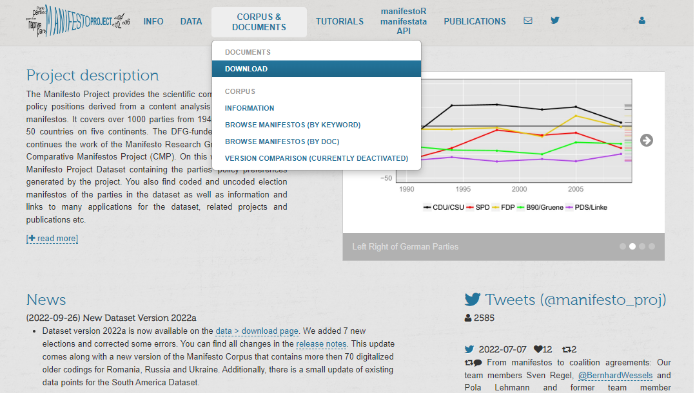
Mulighet 2: API
Under manifestoR manifestata API, velg API.
Se på dokumentasjonen til APIet.
Konstruer en API-spørring for de variablene og enhetene vi er interessert i.
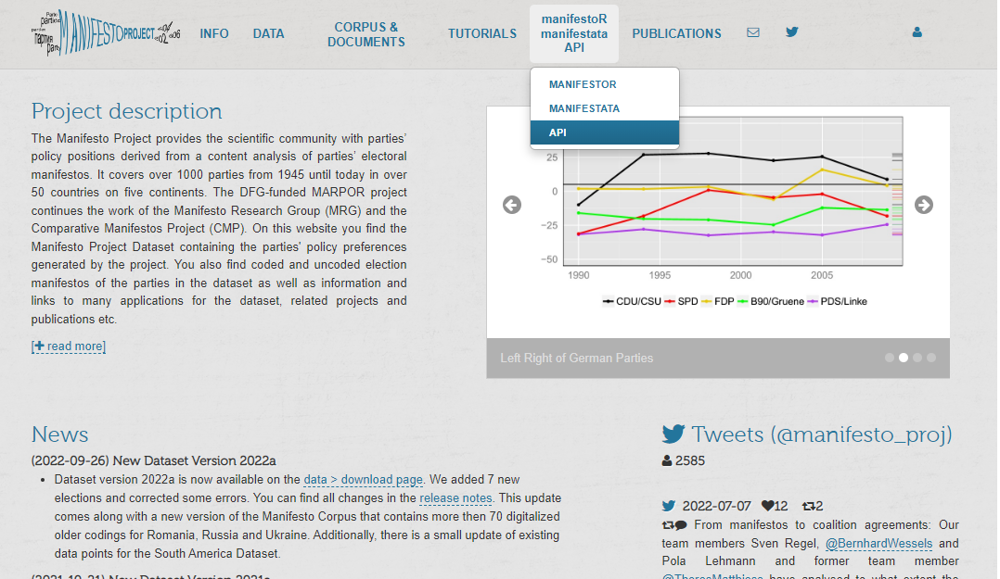
library(httr) # API-pakke for R
library(readtext) # Pakke for å lese inn txt-filer (her har jeg min API-nøkkel)
library(jsonlite) # Pakke for å jobbe med json-format
my_api_key <- readtext("manifesto_api_key_sb.txt") %>% pull(text)
api_sporring <- str_c("https://manifesto-project.wzb.eu/api/v1/texts_and_annotations?api_key=", my_api_key, "&keys[]=12620_201709&version=2022-1")
api_sporring## [1] "https://manifesto-project.wzb.eu/api/v1/texts_and_annotations?api_key=dc6fed150a02cf08a1619e5dbd598c54&keys[]=12620_201709&version=2022-1"- https://manifesto-project.wzb.eu/api/v1/texts_and_annotations – fast del av API-spørringen
- ?api_key= – spør etter en API-nøkkel som man får hvis man lager en profil på nettsiden
- keys[]=12620_2017_09 – vi ønsker oss Norges (12) konservative parti (620) i valget september 2017 (2017_09)
- &version=2022-1 – og fra manifesto-versjonen i 2022
Partiprogramtekst (leddsetninger) for Høyre
manifesto_query <- GET(api_sporring) %>% # GET henter ut data fra spørringen
httr::content(as = "text") %>% # Denne funksjonen gir oss infoen i JSON-tekst
jsonlite::fromJSON() # Leser inn i R fra JSON-formatet
manifesto_df <- manifesto_query$items$items %>% # Nøstet langt inne i spørringen er dataframen vår
tibble(tekst = .) %>% # Gjør om dette til en tibble med variabelnavn "tekst"
unnest(cols = c(tekst)) # Og flett ut dataframen
manifesto_df %>%
slice_head(n = 4) # Print de fire første radene i datasettet## # A tibble: 4 x 3
## text cmp_code eu_code
## <chr> <chr> <lgl>
## 1 HØYRES FORMÅLSPARAGRAF H NA
## 2 ”Høyre vil føre en konservativ fremskrittspolitikk, 203 NA
## 3 bygget på det kristne kulturgrunnlag, 603 NA
## 4 rettsstaten og folkestyret, 202.1 NAPartiprogramtekst (leddsetninger) for Arbeiderspartiet og Høyre
api_sporring2 <- str_c("https://manifesto-project.wzb.eu/api/v1/texts_and_annotations?api_key=", my_api_key, "&keys[]=12620_201709&keys[]=12320_201709&version=2022-1")
manifesto_query <- GET(api_sporring2) %>%
httr::content(as = "text") %>%
jsonlite::fromJSON()
manifesto_df <- manifesto_query$items$items %>%
tibble(tekst = .) %>%
mutate(parti = manifesto_query$items$key) %>%
unnest(cols = c(tekst))
manifesto_df %>%
group_by(parti) %>%
slice_head(n = 3)## # A tibble: 6 x 4
## # Groups: parti [2]
## text cmp_code eu_code parti
## <chr> <chr> <lgl> <chr>
## 1 PARTIPROGRAM 2017–2021 H NA 12320_20~
## 2 Alle skal med. H NA 12320_20~
## 3 Våre verdier og vår tid H NA 12320_20~
## 4 HØYRES FORMÅLSPARAGRAF H NA 12620_20~
## 5 ”Høyre vil føre en konservativ fremskrittspolitikk, 203 NA 12620_20~
## 6 bygget på det kristne kulturgrunnlag, 603 NA 12620_20~Mulighet 3: R-pakke for API
- Kan bruke API-et gjennom
Rmed vanligeR-funksjoner
library(manifestoR) # Last inn R-pakken
mp_setapikey("manifesto_api_key_sb.txt") # Sett API-nøkkel
mp_metadata(countryname == "Norway") %>% # Hent ut informasjon til spørringen (f. eks. hvis vi er interessert i Norge)
slice_head(n = 6)## Connecting to Manifesto Project DB API... corpus version: 2022-1
## Connecting to Manifesto Project DB API...
## Connecting to Manifesto Project DB API... corpus version: 2022-1
## Connecting to Manifesto Project DB API... corpus version: 2022-1## # A tibble: 6 x 15
## party date language source has_eu_~1 is_pr~2 may_c~3 manif~4 md5su~5 url_o~6
## <dbl> <dbl> <chr> <chr> <lgl> <lgl> <lgl> <chr> <chr> <chr>
## 1 12220 194510 <NA> <NA> FALSE NA NA <NA> <NA> <NA>
## 2 12320 194510 <NA> <NA> FALSE NA NA <NA> <NA> <NA>
## 3 12420 194510 <NA> <NA> FALSE NA NA <NA> <NA> <NA>
## 4 12520 194510 <NA> <NA> FALSE NA NA <NA> <NA> <NA>
## 5 12620 194510 <NA> <NA> FALSE NA NA <NA> <NA> <NA>
## 6 12810 194510 <NA> <NA> FALSE NA NA <NA> <NA> <NA>
## # ... with 5 more variables: md5sum_original <chr>, annotations <lgl>,
## # handbook <chr>, is_copy_of <chr>, title <chr>, and abbreviated variable
## # names 1: has_eu_code, 2: is_primary_doc, 3: may_contradict_core_dataset,
## # 4: manifesto_id, 5: md5sum_text, 6: url_originalDe hele partiprogramtekstene
valgprogram_corpus <- mp_corpus(countryname == "Norway" & # Ønsker Norge
edate > as.Date("2017-01-01") & # Alle partiprogrammer fra etter 2017
partyname %in% c("Conservative Party", # For Høyre
"Labour Party")) # Og for Arbeiderpartiet## Connecting to Manifesto Project DB API... corpus version: 2022-1valgprogram_tekst <- valgprogram_corpus %>%
tidy() %>% # Gjør om fra "corpus"-objekt til vanlig dataframe
select(party, date, title, text) # Hent ut disse variablene
valgprogram_tekst## # A tibble: 2 x 4
## party date title text
## <dbl> <dbl> <chr> <chr>
## 1 12320 201709 Alle skal med. Partiprogram 2017-2021 "PARTIPROGRAM 201~
## 2 12620 201709 Vi tror på Norge. Høyres program for 2017-2021 "HØYRES FORMÅLSPA~Leddsetningene fra partiprogrammene med cmp_code
valgprogram_annotert <- valgprogram_corpus %>%
as.data.frame(with.meta = TRUE)
valgprogram_annotert %>%
select(party, date, title, cmp_code, text) %>%
slice_head(n = 6)## party date title cmp_code
## 1 12320 201709 Alle skal med. Partiprogram 2017-2021 H
## 2 12320 201709 Alle skal med. Partiprogram 2017-2021 H
## 3 12320 201709 Alle skal med. Partiprogram 2017-2021 H
## 4 12320 201709 Alle skal med. Partiprogram 2017-2021 503
## 5 12320 201709 Alle skal med. Partiprogram 2017-2021 606.1
## 6 12320 201709 Alle skal med. Partiprogram 2017-2021 701
## text
## 1 PARTIPROGRAM 2017–2021
## 2 Alle skal med.
## 3 Våre verdier og vår tid
## 4 Arbeiderpartiets mål er frihet, muligheter og trygghet for alle.
## 5 Det oppnår vi best i fellesskap.
## 6 Arbeiderbevegelsen har kjempet frem et samfunn som sikrer folket tilgang til kunnskap, velferd og eierskap til landets rike naturressurser.## # A tibble: 143 x 8
## type domain_code domain_name code variable_name title descr~1 label
## <chr> <chr> <chr> <chr> <chr> <chr> <chr> <chr>
## 1 main 0 NA 000 peruncod No ot~ "Share~ perc~
## 2 main 1 External Relations 101 per101 Forei~ "Favou~ fore~
## 3 main 1 External Relations 102 per102 Forei~ "Negat~ fore~
## 4 main 1 External Relations 103 per103 Anti-~ "Negat~ anti~
## 5 main 1 External Relations 104 per104 Milit~ "The i~ mili~
## 6 main 1 External Relations 105 per105 Milit~ "Negat~ mili~
## 7 main 1 External Relations 106 per106 Peace "Any d~ peace
## 8 main 1 External Relations 107 per107 Inter~ "Need ~ inte~
## 9 main 1 External Relations 108 per108 Europ~ "Favou~ euro~
## 10 main 1 External Relations 109 per109 Inter~ "Negat~ inte~
## # ... with 133 more rows, and abbreviated variable name 1: description_md## code: 503
## title: Equality: Positive
## description_md: Concept of social justice and the need for fair treatment of all people.
## This may include:
##
## - Special protection for underprivileged social groups;
##
## - Removal of class barriers;
##
## - Need for fair distribution of resources;
##
## - The end of discrimination (e.g. racial or sexual discrimination).Latent variabel
Hva er en “latent variabel”?
- Et underliggende konsept
- Kan ikke observeres direkte, bare gjennom flere andre variabler
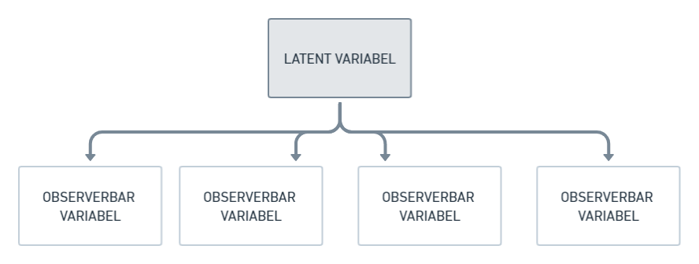
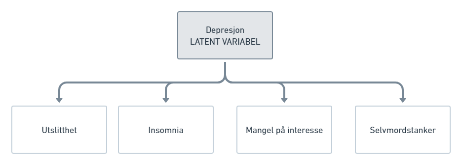
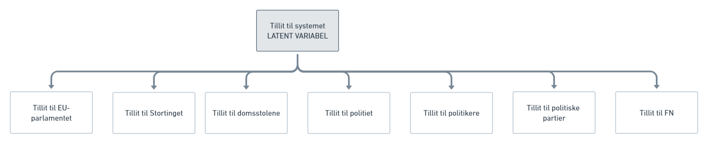
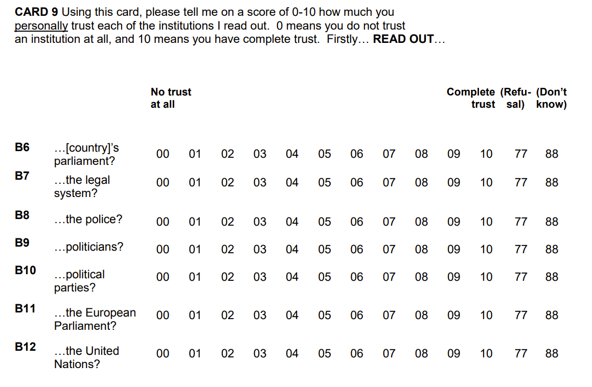
Politisk posisjon - et latent konsept
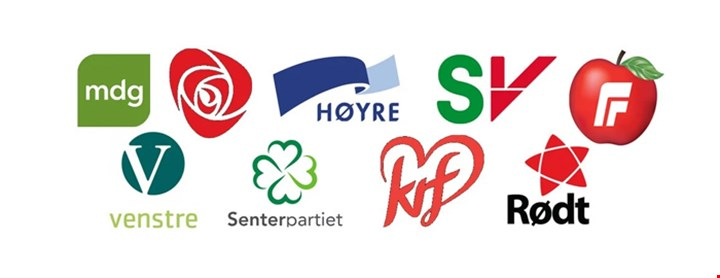
- Vi kan ikke observere partiers politiske posisjon direkte
- Men vi kan observere andre ting:
- Taler
- Uttalelser i media
- Partiprogram
Høyre-venstre-aksen
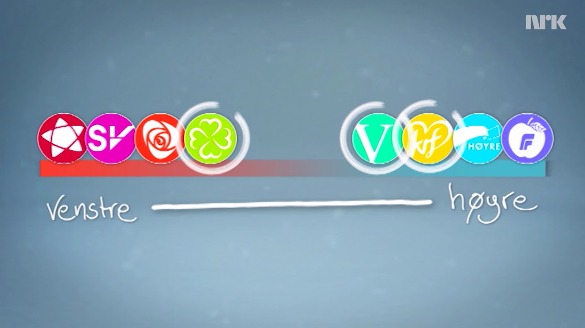
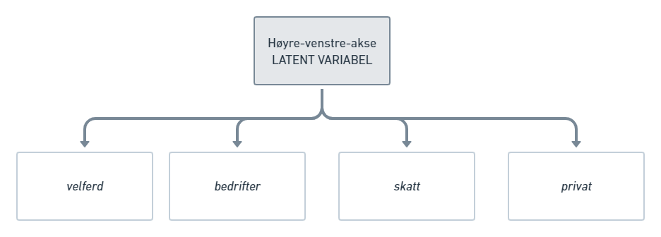
Andre skillelinjer
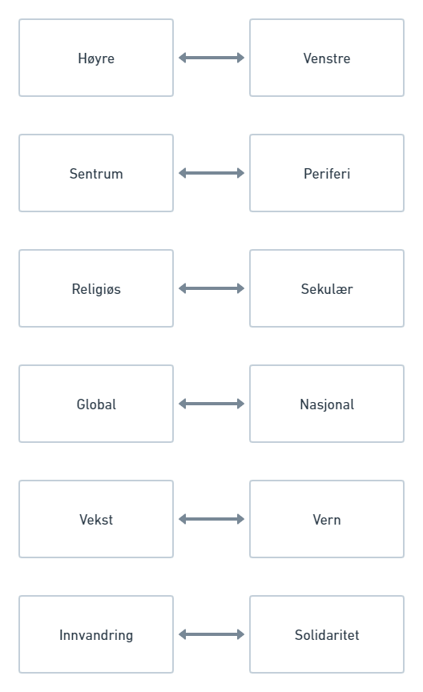
Tekstskalering
- Tekstskalering: Å estimere posisjoner for tekster på en dimensjon.
- Skala: En kontinuerlig variabel mellom to ekstremer, f. eks. lav-høy, liten-stor, billig-dyr.
- Tekster er observerte data for en aktør, f. eks. partiprogrammer for politiske partier.
- Data er ordene som blir brukt i tekstene.
- Antakelse: At alle tekstene i utvalget befinner seg på den skalaen vi forsøker å måle.
Tekstskalering med manifestoR
Vi kan anta at venstrepartier snakker mer om “venstre”-saker, og høyrepartier snakker mer om “høyre”-saker
I Comparative Manifesto Project har man kodet hva slags sak partiene snakker om i partiprogrammene
Vi kan gruppere disse sakene inn i venstre- og høyre-politikk
Venstre-høyre-aksen i Comparative Manifesto Project
- Finn prosentandel av partiprogrammet som brukes på sak X
- Summer opp prosentandelen som brukes på høyre-saker (H) og prosentandelen som brukes på venstre-saker (V)
- Trekk prosentandelen for høyresaker (H) fra prosentandelen på venstresaker (V)
Rile index : Indeks for venstre-høyre akse (left-right = rile)
rile = H - V
Slik finner man rile ved å bruke R:
valgprogram_corpus <- mp_corpus(countryname == "Norway" & # Bruker manifestoR-pakken for å hente ut norske partiprogram
edate > as.Date("2013-01-01")) # Velger alle partiprogram som kom etter 1. januar 2013## Connecting to Manifesto Project DB API... corpus version: 2022-1Rile
for norske partiprogram 2013-2017 ifølge manifestoR
Rile er -100 hvis et parti kun snakker om venstre-saker og +100 hvis et parti kun snakker om høyre-saker.
## parti aar rile
## 1 AP 2017 -34.7117296
## 2 Høyre 2017 -16.9215590
## 3 MDG 2013 -21.8804411
## 4 MDG 2017 -18.2157870
## 5 SV 2013 -32.4862457
## 6 SV 2017 -33.0240550
## 7 Rødt 2017 -32.3647743
## 8 AP 2013 -29.6660808
## 9 Venstre 2013 -21.5098242
## 10 Venstre 2017 -18.3303549
## 11 KrF 2013 -18.7420423
## 12 KrF 2017 -18.3908046
## 13 Høyre 2013 -20.6286837
## 14 SP 2013 -22.4082073
## 15 SP 2017 -24.4330651
## 16 FrP 2013 -12.0577617
## 17 FrP 2017 -0.1813237
Egenlagde skaleringsfunksjoner
Hva med vekst-vern dimensjonen?
# mp_codebook() - sjekk hva de ulike kodene betyr med kodeboken
custom_scale <- function(data) {
scale_ratio_1(data,
pos = c("per501"), # Environmental Protection
neg = c("per410")) # Economic Growth: Positive
}
custome_scale <- mp_scale(valgprogram_corpus, scalingfun = custom_scale)## parti aar custom_scale
## 1 MDG 2013 1.00000000
## 2 MDG 2017 1.00000000
## 3 SV 2013 1.00000000
## 4 Rødt 2017 1.00000000
## 5 SP 2013 1.00000000
## 6 Venstre 2013 0.99236641
## 7 KrF 2013 0.98268398
## 8 SV 2017 0.95890411
## 9 Høyre 2013 0.91666667
## 10 FrP 2013 0.90804598
## 11 AP 2013 0.88888889
## 12 Venstre 2017 0.86319218
## 13 Høyre 2017 0.49659864
## 14 KrF 2017 0.40928270
## 15 AP 2017 0.13664596
## 16 SP 2017 0.07692308
## 17 FrP 2017 -0.23287671Utfordringer med hånd-kodet skalering
- Ikke sikkert at man klarer å fange opp alle saker innenfor en dimensjon.
- Hvilke saker som faller innenfor en dimensjon kan variere over tid og mellom land.
- Ikke alle saker veier like tungt i hvorvidt de reflekterer en dimensjon.
- Det finnes ingen usikkerhetsmål ettersom kodingen har skjedd kun én gang.
Diskusjon
Tekstskalering med wordscores
Tanken bak wordscores
- Hvis vi allerede vet (a priori) hvor på en dimensjon enkelte av tekstene er
- Så kan vi bruke disse tekstene som referansetekster
- Og gi en score til ordene basert på ordfrekvensen
- Som kan si noe om hvor de andre tekstene (jomfrutekster) befinner seg i forhold til dem
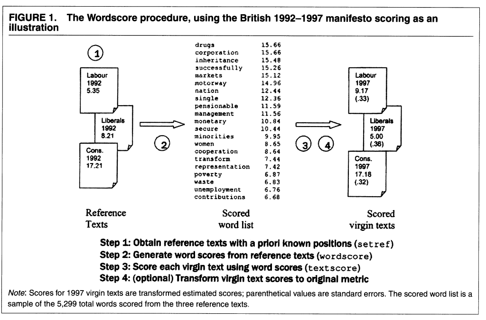
Referansetekster og jomfrutekster
wordscores er en form for veiledet læring.
Referansetekster = treningsdata
Jomfrutekster = testdata
Referansetekster må være en god og valid benchmark for å skalere jomfrutekstene.
Referansetekster
Selecting reference texts thus involves crucial substantive and qualitative decisions by the researcher, equivalent to the decisions made in the design or choice of either a substantive coding scheme for hand-coded content analysis or a coding dictionary for traditional computer-coding.
- Referansetekster må ha samme ordbruk (partiprogram, stortingstaler, etc.)
- Bør være representative, dvs. illustrere både ekstremposisjoner på en skala i tillegg til sentrum
- Bør være nokså lange, slik at de inneholder så mange ord som mulig (som også dukker opp i jomfrutekstene)
wordscore eksempel
La oss bruke ekspersurvey kalt V-Party dataset: https://www.v-dem.net/vpartyds.html
- Filtrerer ut Norge i 2013
- Henter ut variabel for partinavn (v2paenname) og variabel for economic left-right scale (v2pariglef)
| Partinavn | Posisjon på økonomisk høyre-venstre-akse |
|---|---|
| Progress Party [Anders Lange’s Party] | 2.292 |
| Norwegian Labour Party | -1.071 |
| Conservative Party | 1.725 |
| Christian Democratic Party | 0.349 |
| Centre [Agrarian] Party | -0.189 |
| Liberal Party of Norway | 0.626 |
## Corpus consisting of 17 documents, showing 17 documents:
##
## Text Types Tokens Sentences parti_aar pos ref_score
## text1 6561 38968 1230 AP_2017 venstre NA
## text2 5522 32790 1839 Høyre_2017 høyre NA
## text3 6082 28883 1603 MDG_2013 venstre NA
## text4 6383 37331 1972 MDG_2017 venstre NA
## text5 8826 64265 3566 SV_2013 venstre NA
## text6 7312 43747 2677 SV_2017 venstre NA
## text7 6739 32975 1885 Rødt_2017 venstre NA
## text8 6825 44355 2561 AP_2013 venstre -1.071
## text9 8263 45470 2530 Venstre_2013 høyre 0.626
## text10 9650 65507 2568 Venstre_2017 høyre NA
## text11 9574 68008 2611 KrF_2013 høyre 0.349
## text12 10188 76917 2904 KrF_2017 høyre NA
## text13 4894 22660 668 Høyre_2013 høyre 1.725
## text14 5501 28441 1274 SP_2013 venstre -0.189
## text15 7191 40462 1709 SP_2017 venstre NA
## text16 7328 43858 1955 FrP_2013 høyre 2.292
## text17 8111 53408 2407 FrP_2017 høyre NAOrd som bidrar til skaleringen
Utfordringer med wordscores
- Må ha tilgang på en god og valid benchmark (f. eks. ekspersurvey)
- Sårbar ift. at score på referansetekster må være riktig (selv eksperter kan være uenig)
- Trenger tekster som dekker hele spekteret av skalaen
- Trenger tekster som inneholder alle relevante ord for å skalere jomfrutekstene (ellers får vi systematisk bias)
- Ikke tydelig hvilke antakelser vi gjør om tekstene på forhånd (kan de f. eks. brukes i tidsserier?)
- Reskalering har vist seg å være sensitiv til analysevalg (Lowe 2008)
- Skiller ikke mellom informative ord og hyppige ord
Diskusjon
Kan vi bruke
wordscoresfor å skalere tekster på noe annet enn den “økonomiske høyre-venstre-aksen”, for eksempel på “vekst-vern-aksen” eller “religiøs-sekulær-aksen”? Hvordan ville du gått fram for å gjøre dette i så fall?
Tekstskalering med wordfish
Likheter og forskjeller til wordscore
Likheter
- Skalerer tekster på en dimensjon
- Krever at ords mening er stabil over tid
- Gir usikkerhetsestimater
Forskjeller
- Krever ingen referansetekster (treningsdata)
- Antar en underliggende fordeling på ordene
- Tekster må i helhet handle om den dimensjonen man forsøker å skalere (f. eks. alle tekster handler om utenrikspolitikk)
Ord som bidrar til skaleringen
Hvilke ord bidrar mest til å plassere tekstene?

Fra
en analyse med wordfish
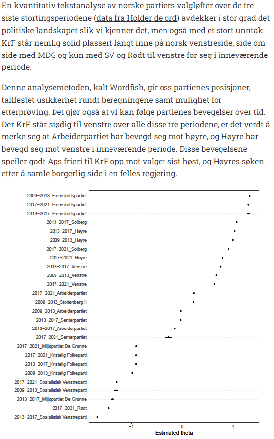
Utfordringer med wordfish
Diskusjonsspørsmål
Hvordan ville du gått fram for å skalere vekst-vern-aksen på partiprogrammene med
wordfish? Kunne du brukt hele dokumentet, eller måtte du hentet ut deler av det?
Korrespondanseanalyse
Hva er korrespondanseanalyse?
- Lowe (2008) argumenterte for at
wordscoreser en form for korrespondanseanalyse


Sammenlike metodene

Polarisering
Hva er polarisering
Variasjon i språk.
Men variasjon kan komme av flere ting:
- Språk
- Stil
- Tema
- Posisjon, preferanser og sentiment
Anvendes typisk på fora der det er mange meningsutvekslinger.
Lauderdale & Herzog (2016): Hvordan måle polarisering innad i samme debatt?
##
## Scaling 2 document groups..
## Factor Analysis on Debate-Level Scales..
## Elapsed time: 12.32 seconds.
Maskinlæring med polarisering
- Peterson & Spirling (2018) har foreslått å bruke en maskinlæringsmodell for å måle polarisering
- Deres framgangsmåte:
- Kjører en maskinlæringsmodell på tekstene
- Klassifiserer (predikerer) hvor vidt en tekst tilhører aktør A eller aktør B
- Hvor god modellen er til å skille aktør A og aktør B avgjør polariseringsgraden
- Hvor god modeller er måles i accuracy
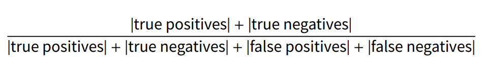
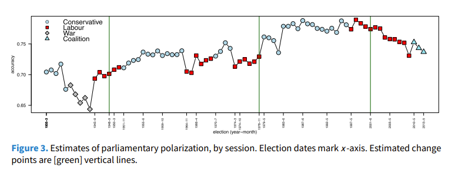
Takk for i dag!
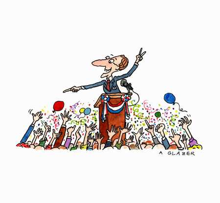